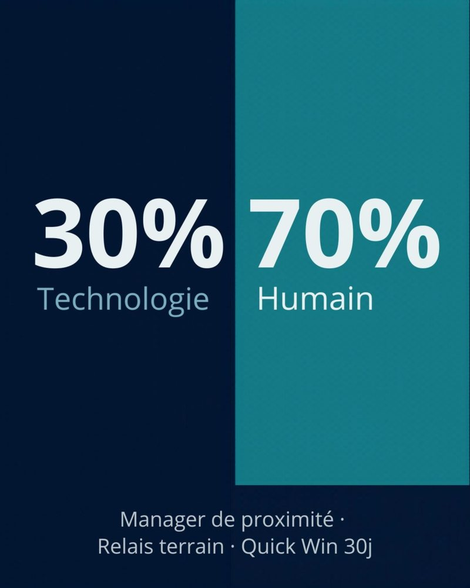

C'est la vérité que personne n'ose dire lors des déploiements à grande échelle : connecter des milliers de véhicules n'est pas un défi informatique. C'est un défi d'accompagnement au changement.

Le vrai blocage ne vient pas du logiciel
Il vient des voix que l'on entend sur le terrain :
- le chef de dépôt : « Pourquoi le siège a-t-il besoin de savoir où sont mes camions ? On ne nous fait pas confiance ? » ;
- le conducteur : « Le boîtier fait bugger le tableau de bord… », ou « C'est un mouchard pour me fliquer. » Et le boîtier finit discrètement débranché.
Ces réactions ne sont pas des caprices. Elles disent que le projet a été présenté comme un outil de contrôle, et non comme un outil qui aide le terrain.
Trois leçons tirées de déploiements complexes
1. Viser le manager de proximité, pas seulement la direction
Le sponsor de direction est indispensable, mais ce n'est pas lui qui répondra aux inquiétudes des équipes le lundi matin à 7 h. C'est le manager de proximité. S'il n'est pas convaincu, le projet est mort-né. Il doit être informé tôt, associé aux règles d'alerte et équipé pour répondre aux questions.
2. La formation « one shot » est une illusion
Une session de formation au lancement ne suffit pas. Il faut un relais identifié sur chaque site : un « champion » local, qui parle le même langage que les conducteurs et les techniciens, et qui sait montrer l'utilité concrète de l'outil au quotidien.
3. Le gain rapide est la seule monnaie d'échange
Si l'outil n'apporte pas une preuve de valeur visible dans les trente premiers jours, qu'il s'agisse de temps gagné, de sécurité renforcée ou de paperasse en moins, l'adhésion est perdue pour de bon.
Le cadre rassure, s'il est expliqué
La géolocalisation des véhicules utilisés par des salariés est encadrée. Informer les salariés, consulter les représentants du personnel et ne pas suivre les déplacements en dehors du temps de travail ne sont pas seulement des obligations : expliqués clairement, ces engagements désamorcent une grande partie des inquiétudes. Dire ce qui est mesuré, et surtout ce qui ne l'est pas, vaut toutes les campagnes de communication.
Vous pouvez acheter la meilleure solution du marché : si vos équipes ne l'adoptent pas, votre ROI est strictement égal à zéro.
Et vous, quel a été votre plus gros défi humain lors d'un projet de transformation digitale ?